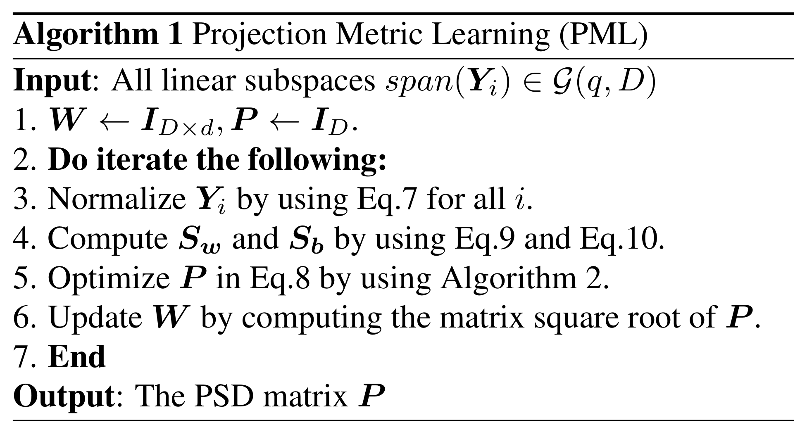

写在前面 最近又开始捡起以前的老本行了，打算写写材料先储备着。介绍Zhiwu Huang前几年的投影度量学习。
投影度量学习 中心思想 用线性子空间来表示信号或图像在近些年来获得了较大的成功，而线性子空间是一种典型的非欧空间，其本质是Grassmann流形。该流形上特征学习的传统手段是是利用核方法将Grassmann流形嵌入到高维Hilbert空间，这里面用到了投影度量，可很好地近似Grassmann流形上的Riemannian几何。然而这种方法的通病在于：
非显式映射，不适用新样本的特征提取与分类 高额的计算成本，高维流形上的算子需要计算奇异值，不利于大规模问题 为此，投影度量学习被提出来实现几何角度的流形降维，得到一个低维且更具有判别力的Grassmann流形，降低运算量，提高特征的分辨能力。
该图对比了核化升维和流形间降维：
(a)-(b)-(d)-(e)需要将流形G ( q , D ) \mathcal G(q,D) G ( q , D ) H \mathcal H H R d \mathbb R^d R d (a)-(b)-(c)则利用投影度量和映射直接完成原始的Grassmann流形G ( q , D ) \mathcal G(q,D) G ( q , D ) G ( q , d ) \mathcal G(q,d) G ( q , d ) 投影度量 Grassmann流形G ( q , D ) \mathcal G(q,D) G ( q , D ) R D \mathbb R^D R D q q q q ( D − q ) q(D-q) q ( D − q )
对任意Y ∈ G ( q , D ) Y\in \mathcal G(q,D) Y ∈ G ( q , D ) Y T Y = I q Y^T Y=I_q Y T Y = I q Φ ( Y ) = Y Y T \Phi(Y)=YY^T Φ ( Y ) = Y Y T D × D D\times D D × D
⟨ Y 1 , Y 2 ⟩ Φ = tr ( Φ ( Y 1 ) T Φ ( Y 2 ) ) \left\langle Y_1,Y_2\right\rangle_{\Phi}=\text{tr}(\Phi(Y_1)^T\Phi(Y_2))
⟨ Y 1 , Y 2 ⟩ Φ = tr ( Φ ( Y 1 ) T Φ ( Y 2 ) )
该内积对于子空间的具体实现(specific realization)具有不变性，诱导出如下距离
d p ( Y 1 Y 1 T , Y 2 Y 2 T ) = 2 − 1 / 2 ∥ Y 1 Y 1 T − Y 2 Y 2 T ∥ F d_p(Y_1 Y_1^T,Y_2 Y_2^T) = 2^{-1/2}\|Y_1 Y_1^T-Y_2 Y_2^T\|_F
d p ( Y 1 Y 1 T , Y 2 Y 2 T ) = 2 − 1 / 2 ∥ Y 1 Y 1 T − Y 2 Y 2 T ∥ F
该距离与Grassmannian流形上的真实测地线距离近差常数倍(2 \sqrt{2} 2
降维映射 由于投影矩阵的对称性，使用双线性映射可实现流形间G ( q , D ) → G ( q , d ) \mathcal G(q,D)\to\mathcal G(q,d) G ( q , D ) → G ( q , d )
f ( Y i Y i T ) = W T Y i Y i T W = ( W T Y i ) ( W T Y i ) T f(Y_iY_i^T)=W^TY_iY_i^TW=(W^TY_i)(W^TY_i)^T
f ( Y i Y i T ) = W T Y i Y i T W = ( W T Y i ) ( W T Y i ) T
其中变换矩阵W ∈ R D × d W\in\mathbb R^{D\times d} W ∈ R D × d W W W W T Y i W^TY_i W T Y i W T Y i W^TY_i W T Y i W T Y i ′ W^TY_i^{'} W T Y i ′
注意：双线性映射f f f Y i ∈ G ( q , D ) Y_i\in\mathcal G(q,D) Y i ∈ G ( q , D ) Y i Y i T Y_iY_i^T Y i Y i T W T Y i ′ ∈ G ( q , d ) W^TY_i^{'}\in\mathcal G(q,d) W T Y i ′ ∈ G ( q , d ) ( W T Y i ′ ) ( W T Y i ′ ) T (W^TY_i^{'})(W^TY_i^{'})^T ( W T Y i ′ ) ( W T Y i ′ ) T
学习投影度量 降维后的一对点( W T Y i ′ , W T Y j ′ ) (W^TY_i^{'},W^TY_j^{'}) ( W T Y i ′ , W T Y j ′ ) Φ \Phi Φ ( W T Y i ′ Y i ′ T W , W T Y j ′ Y j ′ T W ) (W^T Y_i^{'}Y_i^{'T} W,W^T Y_j^{'}Y_j^{'T} W) ( W T Y i ′ Y i ′ T W , W T Y j ′ Y j ′ T W )
d p 2 ( W T Y i ′ Y i ′ T W , W T Y j ′ Y j ′ T W ) = 2 − 1 / 2 ∥ W T Y i ′ Y i ′ T W − W T Y j ′ Y j ′ T W ∥ F 2 = 2 − 1 / 2 tr ( P A i j A i j T P ) \begin{aligned}
&d_p^2(W^T Y_i^{'}Y_i^{'T} W,W^T Y_j^{'}Y_j^{'T} W)\\
&=2^{-1/2}\|W^T Y_i^{'}Y_i^{'T} W-W^T Y_j^{'}Y_j^{'T} W\|_F^2\\
&=2^{-1/2}\text{tr}(PA_{ij}A_{ij}^TP)
\end{aligned}
d p 2 ( W T Y i ′ Y i ′ T W , W T Y j ′ Y j ′ T W ) = 2 − 1 / 2 ∥ W T Y i ′ Y i ′ T W − W T Y j ′ Y j ′ T W ∥ F 2 = 2 − 1 / 2 tr ( P A i j A i j T P )
其中A i j = Y i ′ Y i ′ T − Y j ′ Y j ′ T A_{ij}=Y_i^{'}Y_i^{'T} - Y_j^{'}Y_j^{'T} A i j = Y i ′ Y i ′ T − Y j ′ Y j ′ T P = W W T P=WW^T P = W W T W W W P P P D × D D\times D D × D d d d
判别函数 下面分别给出类间散度J b ( P ) J_b(P) J b ( P ) J w ( P ) J_w(P) J w ( P )
J w ( P ) = 1 N w ∑ i = 1 m ∑ j : C i = C j 2 − 1 / 2 tr ( P A i j A i j T P ) J b ( P ) = 1 N b ∑ i = 1 m ∑ j : C i ≠ C j 2 − 1 / 2 tr ( P A i j A i j T P ) \begin{aligned}
J_w(P)&=\frac{1}{N_w}\sum_{i=1}^m\sum_{j:C_i=C_j}2^{-1/2}\text{tr}(PA_{ij}A_{ij}^TP)\\
J_b(P)&=\frac{1}{N_b}\sum_{i=1}^m\sum_{j:C_i\neq C_j}2^{-1/2}\text{tr}(PA_{ij}A_{ij}^TP)
\end{aligned}
J w ( P ) J b ( P ) = N w 1 i = 1 ∑ m j : C i = C j ∑ 2 − 1 / 2 tr ( P A i j A i j T P ) = N b 1 i = 1 ∑ m j : C i = C j ∑ 2 − 1 / 2 tr ( P A i j A i j T P )
判别分析的一类传统设定是最大化投影点类间距离而最小化投影点类内距离，即目标函数为
arg min P J ( P ) = J w ( P ) − α J b ( P ) \arg\min_P J(P) = J_w(P) - \alpha J_b(P)
arg P min J ( P ) = J w ( P ) − α J b ( P )
其中参数α \alpha α
标准化Y Y Y 前面提过，W W W W T Y i W^TY_i W T Y i Y i ∈ G ( q , D ) Y_i\in\mathcal G(q,D) Y i ∈ G ( q , D ) Y i ′ Y_i^{'} Y i ′ W T Y i ′ ∈ G ( q , d ) W^TY_i^{'}\in\mathcal G(q,d) W T Y i ′ ∈ G ( q , d )
对W T Y i W^TY_i W T Y i W T Y i = Q i R i W^TY_i=Q_i R_i W T Y i = Q i R i Q i Q_i Q i R i R_i R i
Q i = W T ( Y i R i − 1 ) = W T Y i ′ Q_i = W^T(Y_i R_i^{-1}) = W^T Y_i^{'}
Q i = W T ( Y i R i − 1 ) = W T Y i ′
因此对Y i Y_i Y i Y i ′ = Y i R i − 1 Y_i^{'}=Y_i R_i^{-1} Y i ′ = Y i R i − 1 W T Y i ′ ∈ G ( q , d ) W^TY_i^{'}\in\mathcal G(q,d) W T Y i ′ ∈ G ( q , d )
计算P P P 由于P P P D × D D\times D D × D d d d P P P
为简化判别目标函数，记
S w = 1 N w ∑ i = 1 m ∑ j : C i = C j 2 − 1 / 2 tr ( A i j A i j T ) S b = 1 N b ∑ i = 1 m ∑ j : C i ≠ C j 2 − 1 / 2 tr ( A i j A i j T ) \begin{aligned}
S_w&=\frac{1}{N_w}\sum_{i=1}^m\sum_{j:C_i=C_j}2^{-1/2}\text{tr}(A_{ij}A_{ij}^T)\\
S_b&=\frac{1}{N_b}\sum_{i=1}^m\sum_{j:C_i\neq C_j}2^{-1/2}\text{tr}(A_{ij}A_{ij}^T)
\end{aligned}
S w S b = N w 1 i = 1 ∑ m j : C i = C j ∑ 2 − 1 / 2 tr ( A i j A i j T ) = N b 1 i = 1 ∑ m j : C i = C j ∑ 2 − 1 / 2 tr ( A i j A i j T )
则两个散度可简化成矩阵的表示
J w ( P ) = P S w P , J b ( P ) = P S b P J_w(P) = PS_wP,J_b(P) = PS_bP
J w ( P ) = P S w P , J b ( P ) = P S b P
目标函数为
arg min P J ( P ) = tr ( P S w P ) − α tr ( P S b P ) \arg\min_P J(P) = \text{tr}(PS_wP)-\alpha\text{tr}(PS_bP)
arg P min J ( P ) = tr ( P S w P ) − α tr ( P S b P )
在第k k k
D P J ( P k ) = 2 ( S w − α S b ) P k D_PJ(P_k)=2(S_w-\alpha S_b)P_k
D P J ( P k ) = 2 ( S w − α S b ) P k
对应的黎曼梯度可从欧式梯度D P J ( P k ) D_PJ(P_k) D P J ( P k )
∇ P J ( P k ) = D P J ( P k ) − P k P k T D P J ( P k ) \nabla_PJ(P_k) = D_PJ(P_k) - P_kP_k^T D_PJ(P_k)
∇ P J ( P k ) = D P J ( P k ) − P k P k T D P J ( P k )
通过组合新的黎曼梯度和旧的搜索方向H k − 1 H_{k-1} H k − 1
H k ← − ∇ P J ( P k ) + η τ ( H k − 1 , P k − 1 , P k ) H_k \leftarrow -\nabla_PJ(P_k) + \eta \tau(H_{k-1},P_{k-1},P_k)
H k ← − ∇ P J ( P k ) + η τ ( H k − 1 , P k − 1 , P k )
算法流程图 
小结 这篇文章虽然是15年的CVPR，但是现在看来文章的想法依然很先进，目前基于流形的判别学习都大致是这类套路，首先将数据信息刻划到流形上，再从流形的几何性质出发，最后构造合适的目标函数并求解。至于用什么性质，构造出什么样的模型，就看功底了。本质上来说，这类文章属于机器学习利用了几何的工具衍生出的一个分支。
References